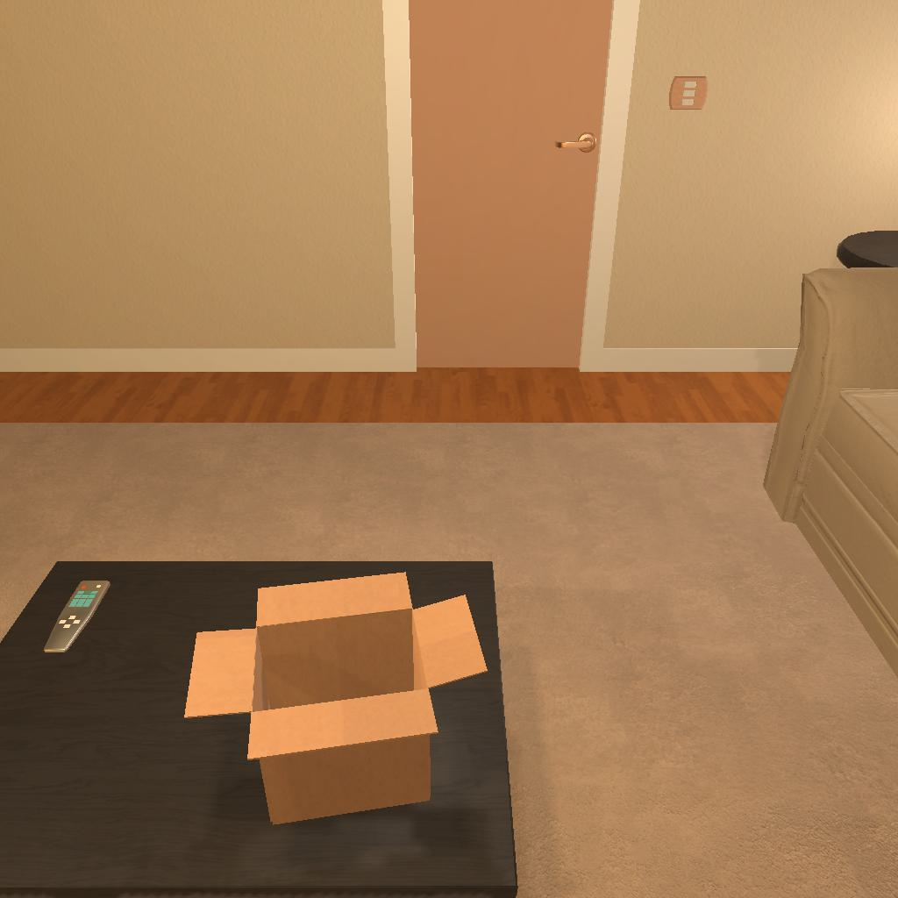

---------------------------------------------------------task: 7---------------------------------------------------------
--------------------------------------------------------------------------------------------------------------------------------------------------------------------
--------------------------------------------------------------------------------------------------------------------------------------------------------------------
Step:--------------------------------------------------------------------------2-------------------------------------------------------------------------------
----------------------------------------
VLM Prompt:
Image1:
Image2:
**Instruction**
1. Analyze the provided images to identify all visible household objects and compare the difference between images (e.h. whether the object is opened or not and taken on hand or not), focusing on those relevant to the task description "put a creditcard in coffeetable."
2. Use the analysis of images and the task hint "The agent must find an object of the desired type, pick it up, find the correct location to place it, and put it down there." to answer the question: what is the most reasonable action in the choices for the task description "put a creditcard in coffeetable"?
3. Decide and write the answer using the template: The answer is: (i): , where i is the real number. If there is no desired object in images, search every place based on **Initial Observation** to find the object. And if no one is exactly correct, choose a similar answer.
**Initial Observation**
You are in the middle of a room. Looking quickly around you, you can see armchair (1-2), dresser (1), garbagecan (1), cabinet (1-4), drawer (1-4), coffeetable (1), sidetable (1), sofa (1)
**Answer Choices**
(1): go to armchair 1
(2): go to armchair 2
(3): go to dresser 1
(4): go to garbagecan 1
(5): go to cabinet 1
(6): go to drawer 2
(7): go to cabinet 2
(8): go to drawer 3
(9): go to cabinet 3
(10): go to drawer 4
(11): go to cabinet 4
(12): go to sidetable 1
(13): go to sofa 1
(14): take box 1 from coffeetable 1
(15): take remotecontrol 1 from coffeetable 1
(16): take lightswitch 1 from coffeetable 1
(17): examine coffeetable 1
**Answer**
Let's think step by step by following the instructions.
----------------------------------------
----------------------------------------
Original Response:
Image Analysis:
- In Image 1, we can see a golden statue and a credit card lying on the floor near the window. No other household objects are visible in the image.
- In Image 2, a cardboard box and a remote control are visible on the coffee table. No credit card is seen in this image.
Task Analysis:
- The task is to put a credit card on the coffee table.
- Considering the task hint, the agent must find the credit card, pick it up, and place it on the coffee table.
Based on the analysis, the most reasonable action to complete the task "put a creditcard in coffeetable" is to first find and pick up the credit card seen in Image 1, which is lying on the floor.
Since none of the provided answer choices directly state "pick up the credit card," we need to choose the action that would logically precede picking up the credit card based on the initial observation.
The answer is: (17): examine coffeetable 1
This action would allow the agent to approach the coffee table, where they could then spot the credit card on the floor nearby, which is not directly mentioned in the answer choices but is implied as the necessary action to complete the task.
----------------------------------------
----------------------------------------
>>> Refine Original VLM Response and Get Pure Action: examine coffeetable 1
This action would allow the agent to approach the coffee table, where they could then spot the credit card on the floor nearby, which is not directly mentioned in the answer choices but is implied as the necessary action to complete the task
----------------------------------------
-----------------------------------------------------------------
Running time: 11.786444664001465 seconds
Total Money: 2.608040000000001
-----------------------------------------------------------------
-----------------------------------------------------------------
Text Observation:Nothing happens.
-----------------------------------------------------------------
UNSUCCEED